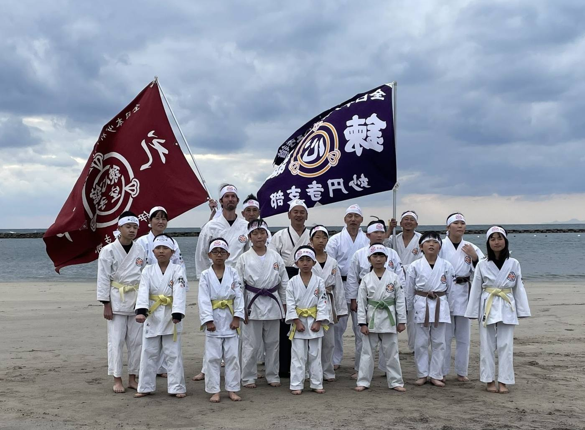
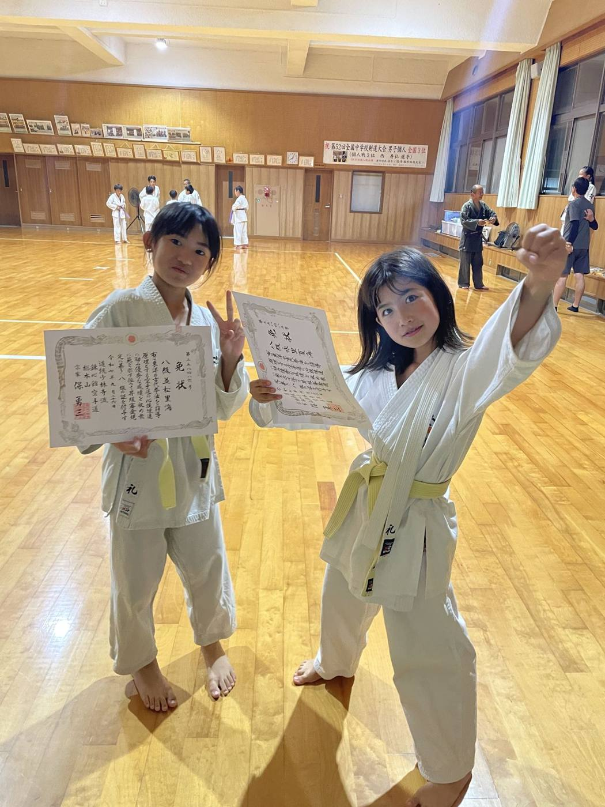
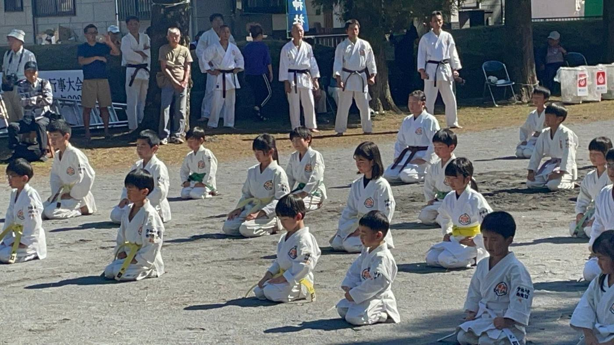
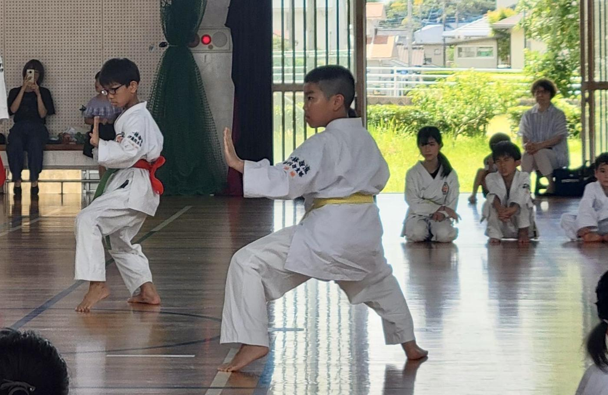
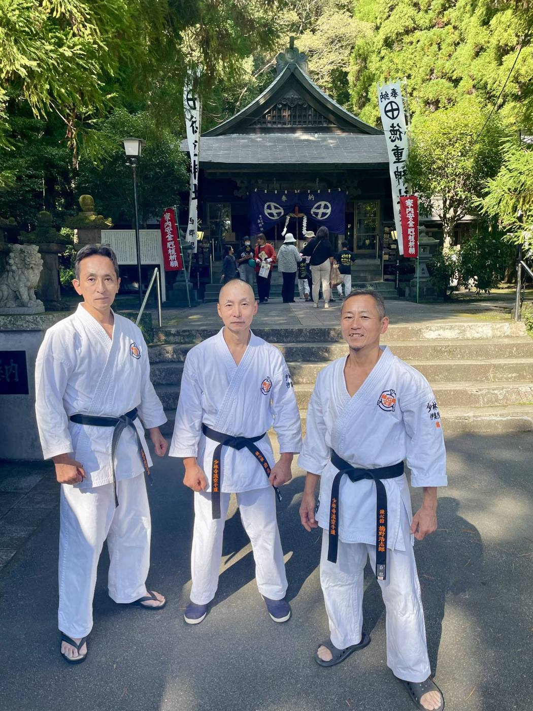
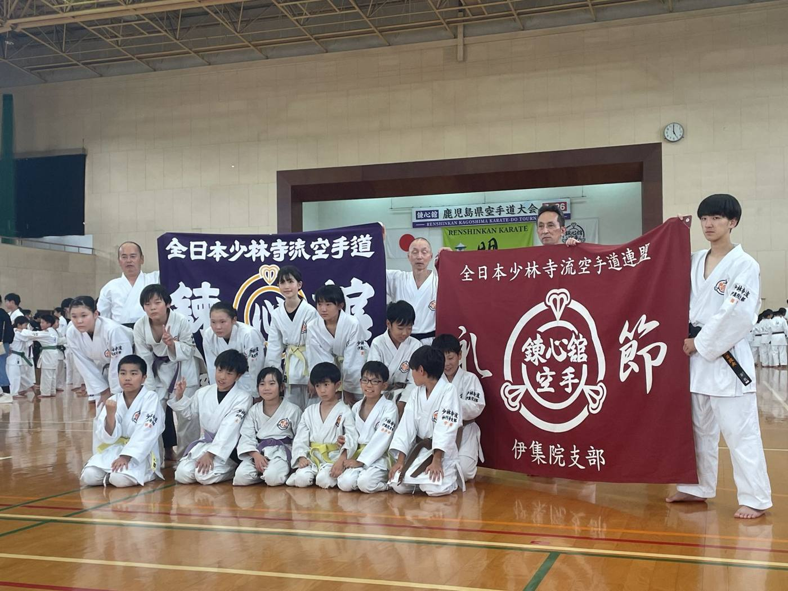
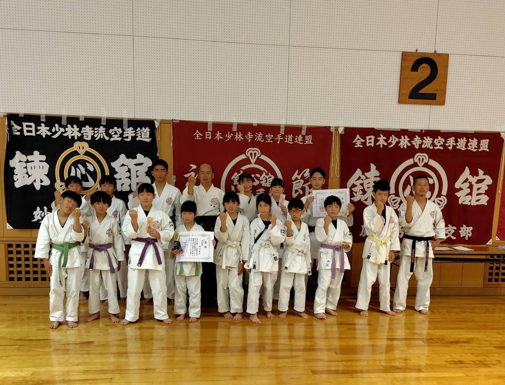
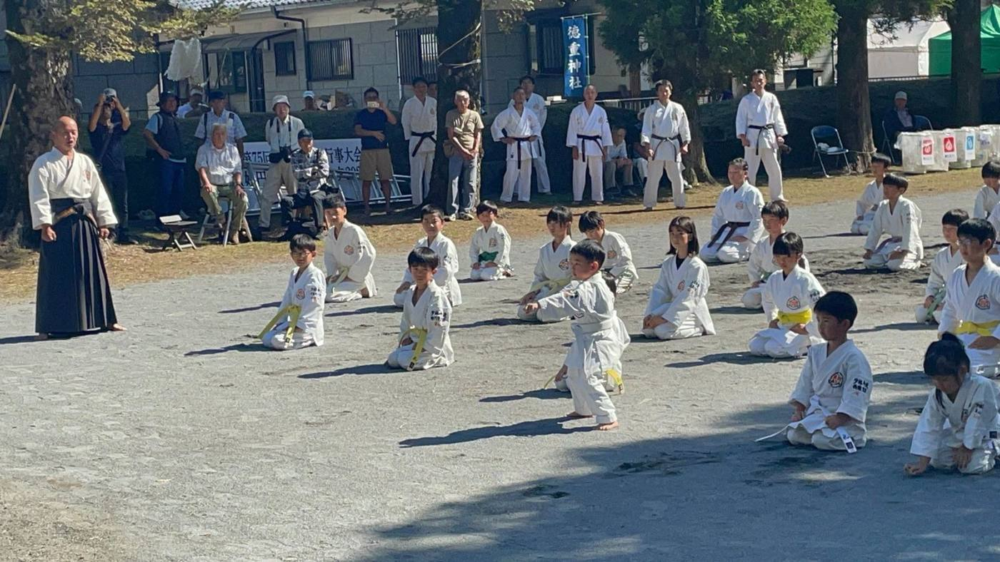
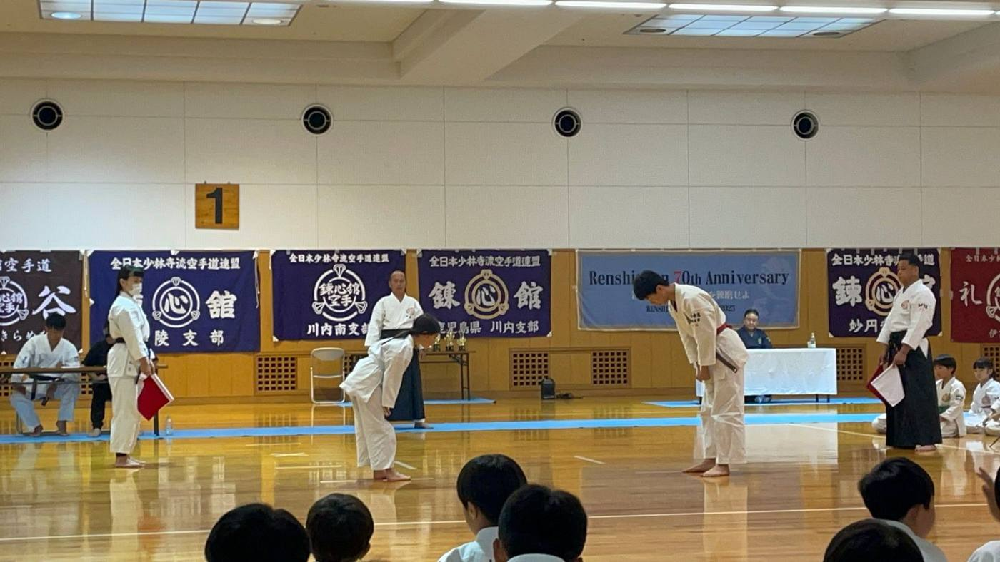
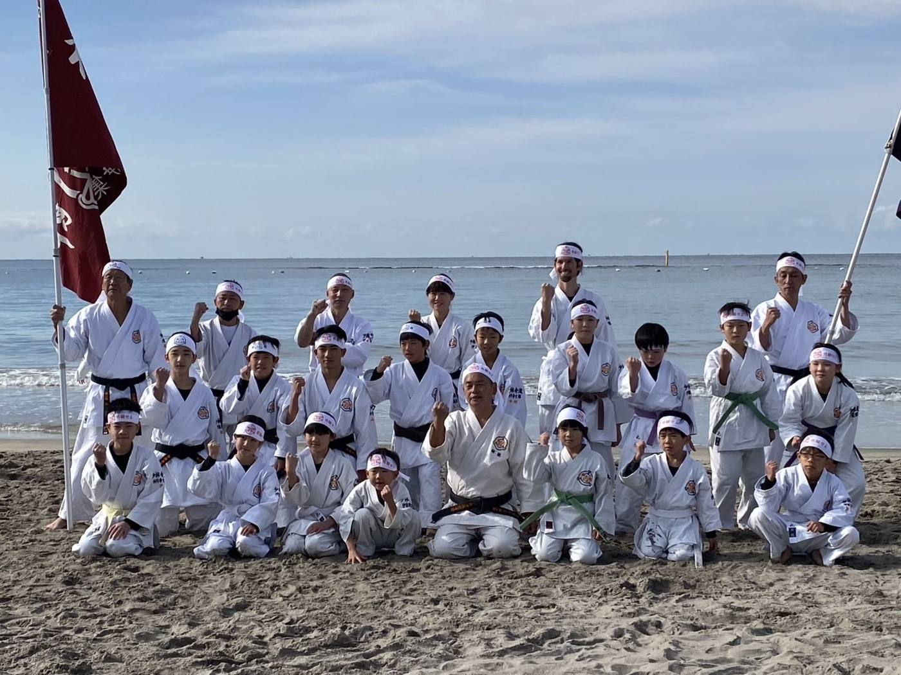

写真 / Photo
見本 SAMPLE
ここに生徒のメッセージが入ります（2〜3文程度）。The student's message goes here (2–3 sentences).




錬心舘伊集院支部は、子どもから大人まで一緒に稽古する空手道場です。5歳から大人まで、初心者・未経験者も大歓迎。見学・体験は無料です。Renshinkan Ijuin is a karate dojo where children and adults train side by side. Ages 5 and up, complete beginners welcome. Trial classes are free.
錬心舘は1955年、開祖・保勇（たもつ いさむ）宗家が鹿児島市で開いた道場に始まります。1964年には伊集院町に総本山「拳士ヶ丘」が開かれ、今も伊集院は錬心舘の本拠地です。Renshinkan began in 1955, when founder Tamotsu Isamu opened a dojo in Kagoshima City. In 1964 the headquarters, Kenshi-ga-oka, was established in Ijuin, which remains the home of Renshinkan today.
「より健全な社会の建設は、
健全な個の形成より始まる」“Building a healthier society begins with forming healthy individuals.”
「空手は型に始まり、型に終わる」。型を稽古の中心に、約束組手、防具を着けた組手を通して、技とともに礼節・精神力・思いやりを育てます。“Karate begins and ends with kata.” Kata is the core of training, alongside pre-arranged and protective-gear kumite. Alongside technique, we cultivate courtesy, mental strength and respect for others.

錬心舘では型の稽古を中心に、年齢と段階に合わせて指導します。防具を着けた組手は高校生以上から。小さなお子さまも、基本と型から無理なく始められます。Renshinkan training centers on kata, taught step by step for each age. Protective-gear kumite starts from high-school age, so young children begin safely with basics and kata.
あいさつ、姿勢、集中力。大会や昇級審査を目標に、仲間と楽しく成長できます。Greetings, posture, focus. Kids grow together with friends, working toward gradings and tournaments.
体力づくり、護身、心のリフレッシュに。運動経験がなくても、自分のペースで始められます。For fitness, self-defense and a clear head. No sports background needed; start at your own pace.
少年部のあとに一般部が続くので、親子で通う方もいます。Adult class follows the youth class, so some parents train with their children.
※学校行事などで休みになる日があります。見学の前にご連絡ください。Classes are occasionally cancelled for school events. Please contact us before visiting.





ここに支部長からのメッセージが入ります（3〜4文程度）。The branch head's welcome message goes here (3–4 sentences).
お気軽に道場へお越しください。Please feel free to drop by the dojo.
5歳から始められます。大人になってから始める方もいます。From age 5. Some people start as adults.
ほとんどの方が未経験から始めています。基本から一つずつ丁寧に指導します。Most people start with no experience. We teach the basics one step at a time.
はい。型を中心にした稽古なので、自分のペースで体力をつけていけます。Yes. Training centers on kata, so you build strength at your own pace.
稽古は火・水・金の週3回です。通う回数はご相談ください。Classes run Tuesday, Wednesday and Friday. We'll help you decide how often to come.
はい。伊集院中学校と妙円寺小学校、どちらの稽古にも参加できます。Yes. You can join classes at both Ijuin JHS and Myoenji ES.
無料です。見学だけでも大丈夫です。保護者の方の見学も歓迎します。It's free, and just watching is fine. Parents are welcome to watch too.
見学したい日と会場をお知らせください。Tell us which day and venue you'd like to visit.
動きやすい服装でお越しください。見学だけでも大丈夫です。Wear comfortable clothes. Just watching is fine too.
道着や月謝などは、そのときに詳しくご説明します。入門後の連絡は保護者LINEグループで行います。We'll explain the uniform and monthly fees in person. After joining, updates go out through the parents' LINE group.
少年部の門下生、一般部の門下生、そして保護者の方に、空手を始めたきっかけや道場での変化を聞きました。We asked youth students, adult students and parents why they started and what has changed since.
ここに生徒のメッセージが入ります（2〜3文程度）。The student's message goes here (2–3 sentences).
ここに生徒のメッセージが入ります（2〜3文程度）。The student's message goes here (2–3 sentences).
ここに一般部のメッセージが入ります。An adult student's message goes here.
ここに保護者の方のメッセージが入ります（お子さまの変化など）。A parent's message goes here (how their child has changed).